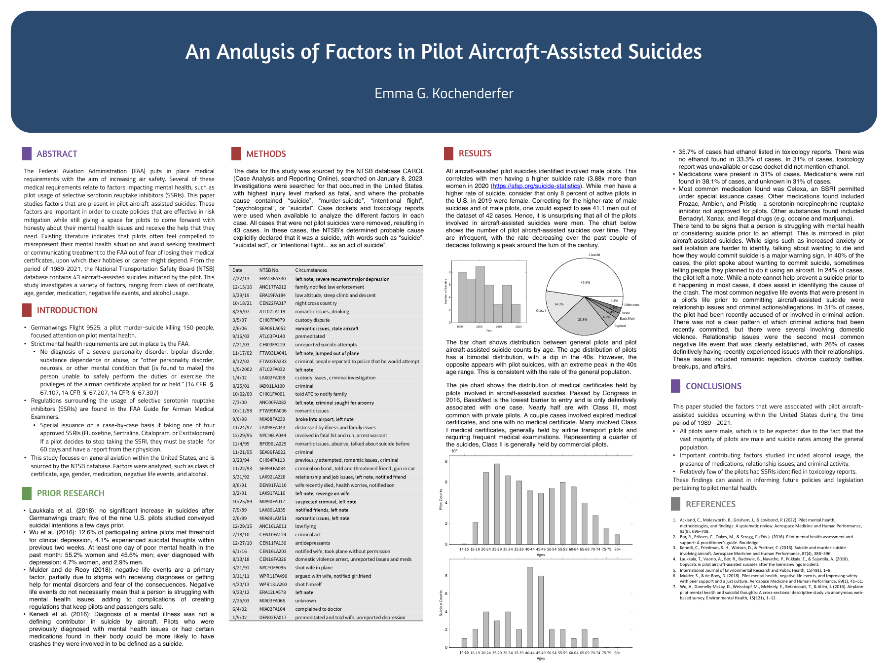

FAA medical requirements exist to keep aviation safe, but they can also push pilots to hide mental health struggles or avoid treatment, for fear of losing the medical certificate their hobby or career depends on. This project asks what factors actually show up in pilot aircraft-assisted suicides, so that policy can manage real risk while still giving pilots room to come forward honestly when they need help.
Presented at the Junior Science and Humanities Symposium (2nd place, Medicine and Health, 2023) and National Conference for Undergraduate Research (2025).
